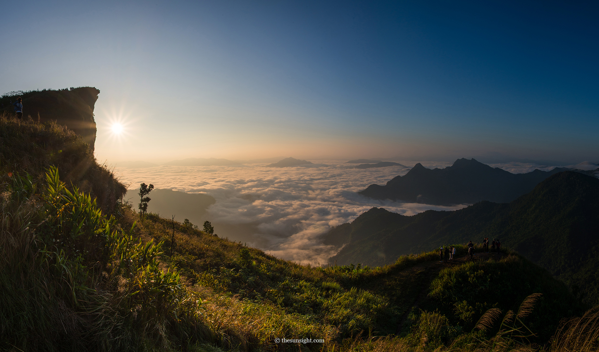

จังหวัดเชียงราย
“เหนือสุดในสยาม ชายแดนสามแผ่นดิน
ถิ่นวัฒนธรรมล้านนา ล้ำค่าพระธาตุดอยตุง”
ประวัติ
หลายคนคงพอทราบแล้วว่า เชียงราย เป็นเมืองเก่าแห่งอาณาจักรล้านนาที่มีประวัติความมายาวมากกก เรียกว่านานกว่า 700
ปีเลยทีเดียว ตามหลักฐานทางประวัติศาสตร์บันทึกไว้ว่า เมื่อวันที่ 26 มกราคม พ.ศ. 1805
หลังจากที่พญามังรายได้รวบรวมหัวเมืองทางเหนือ และเสด็จไปรวมพลที่ เมืองลาวกู่ต้า
ช้างก็พระองค์ก็ได้พลัดหายไปทางทิศตะวันออก พระองค์จึงเสด็จตามรอยช้างไปจนถึง ดอยจอมทอง ที่ตั้งอยู่ตรงริ่มฝั่ง
แม่น้ำกกนัทธี เห็นว่าชัยภูมิเหมาะแก่การสร้างเมือง จึงให้สร้างเวียงโอบล้อมดอยจอมทองไว้ ขนานนามว่า
“เวียงเชียงราย”
สถานที่ท่องเที่ยว
1.ภูชี้ฟ้า

ภูชี้ฟ้า เป็นยอดเขาสูงที่สุดในเทือกเขาดอยผาหม่น อยู่ติดพรมแดนไทย-ลาว ตั้งอยู่ในอำเภอเทิง จังหวัดเชียงราย
มีเอกลักษณ์ทางธรรมชาติที่สวยงาม เพราะมีหน้าผาปลายยอดแหลม เป็นแนวยาวที่ชี้ไปบนฟ้าทางฝั่งประเทศลาว
เลยทำให้เป็นที่มาของชื่อ ภูชี้ฟ้า นั่นเอง ที่นี่จะอยู่สูงกว่า 1,200 - 1,628 เมตร
และจุดสูงสุดคือบริเวณจุดชมวิว
2.ภูชี้ดาว
ภูชี้ดาว เป็นจุดชมวิวธรรมชาติ ตั้งอยู่ที่ ตำบลปอ อำเภอเวียงแก่น จังหวัดเชียงราย ระหว่างภูชี้ฟ้าและดอยผาตั้ง
ใกล้กับภูชี้เดือน สูงประมาณ 1,800 เมตร ซึ่งสูงกว่าภูชี้ฟ้าและดอยผาตั้ง
วิวทิวทัศน์ของภูชี้ดาวนั้นสามารถมองเห็นวิวได้แบบ 360 องศา
และเห็นแม่น้ำโขงอยู่ด้านหลังอย่างสวยงามพร้อมกับธรรมชาติอันอุดมสมบูรณ์ของป่าด้านล่างด้วย
3.ดอยผาตั้ง
ดอยผาตั้ง ตั้งอยู่ที่ บ้านผาตั้ง ตำบลปอ อำเภอเวียงแก่น จังหวัดเชียงราย เป็นบริเวณที่ตั้งของหมู่บ้านชาวจีน
ฮ่อ ม้ง และ เย้า โดยเฉพาะชาวจีนฮ่อ ที่เมื่อครั้งในอดีตนั้น เคยเป็นส่วนหนึ่งของกองพล 93
ที่อพยพเข้ามาตั้งถิ่นฐานเหมือนกันกับที่ดอยแม่สลอง
4.ดอยช้างมูบ
ดอยช้างมูบ เป็นที่ตั้งของ ฐานปฏิบัติการดอยช้างมูบ อยู่บนแนวสันเขาแบ่งเขตแดนไทย-เมียนมา ตำบลโป่งงาม
อำเภอแม่สาย จังหวัดเชียงราย เป็นจุดชมวิวบนยอดดอยที่สวยงดงามมากๆ เพราะจะมีลานหญ้าสีเขียวสวยงามและระเบียงชมวิว
ที่สามารถชมวิวเทือกเขาฝั่งเมียนมาได้แบบไกลสุดลูกหูลูกตาเลย